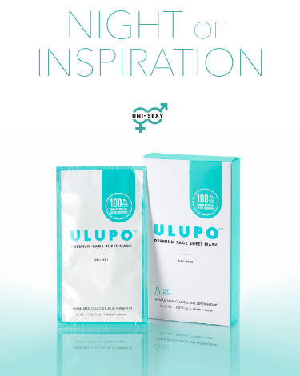
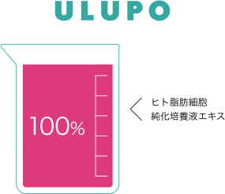

<!DOCTYPE html>
<html lang="ja"  prefix="og: http://ogp.me/ns#">
<head>
    <meta charset="UTF-8">
    <meta name="viewport" content="width=device-width, initial-scale=1.0, minimum-scale=1.0">
    <meta property="og:url" content="https://snow1874.github.io/ulupo-test/" />
    <meta property="og:type" content=" ページの種類" />
    <meta property="og:title" content="ULUPO" />
    <meta property="og:description" content=" ページのディスクリプション" />
    <meta property="og:site_name" content="ULUPO" />
    <meta property="og:image" content="img/ogp_image.jpg" /> 
    <meta name="twitter:card" content="summary_large_image">
    <meta property="fb:app_id" content="[app_id]" />   
    <title>ウルポ 「新未来型フェイスシートマスク」</title>
    <link rel="icon" type="image/x-icon" href="img/favicon.ico">
    <link rel="stylesheet" href="styles/reset.css">
    <link rel="stylesheet" href="styles/style.css">
</head>
<body>
    <header class="header">
        <div class="header_inner">
            <div class="header_main">
                <h1 class="h_logo">
                    <a href="/"></a>
                </h1>
                <div id="gnav">
                    <nav>
                        <ul id="gnav_list">
                            <li class="list">
                                <a target="_blank" href="https://www.facebook.com/UlupoOfficial/">
                                    
                                </a>
                            </li>
                            <li class="list">
                                <a target="_blank" href="https://www.instagram.com/ulupo_official/">
                                    
                                </a>
                            </li>
                            <li class="list">
                                <a target="_blank" href="https://twitter.com/OfficialUlupo">
                                    
                                </a>
                            </li>
                            <li class="list">
                                <a target="_blank" href="">
                                    
                                </a>
                            </li>
                        </ul>
                    </nav>
                </div>
            </div>
        </div>
    </header>

    <div class="main_cc">
        <h2>ウルポ 「新未来型フェイスシートマスク」</h2>
    </div>

    <div class="fixed_banner">
            <div class="banner_inner">
                <div class="info">
                    5枚×26ml<br>
                    <span>5,500</span>円（税込）
                </div>
                <div class="btn">
                    <a target="_blank" href="https://esthy.shop/ulupo/">購入はこちら</a>
                </div>
            </div>
    </div>

    <main>
        <div class="mv">
            <h2>
                
                
            </h2>
        </div>

        <section class="feature">
            <div class="feature_inner">
                <div class="img_area">
                    
                </div>
                <div class="feature_annotation">
                    旭化成ベンリーゼTM使用（承認番号：F40Z307)<br>
                    ※自重の13倍もの水分を保持                
                </div>
            </div>
        </section>

        <section class="about">
            <div class="section_inner">
                <h2>
                    
                </h2>
                <p class="about_lead">
                    ハワイ語で<br>
                    「一夜のインスピレーション」と言う意味を持ち<br>
                    ハワイのパワースポット、<br>
                    ウルポ・ヘイアウから一晩で蘇り<br>
                    力みなぎるお肌へと願いを込めて<br>
                    商品名をULUPO(ウルポ)といたしました。<br>
                    女性・男性問わずお使い頂けますよう<br>
                    有効成分の浸透力を極限まで極めた<br>
                    フェイスマスクとなっております。                
                </p>
            </div>
        </section>

        <section class="ingredients">
            <div class="section_inner">
                <h2 class="sec_ttl">純生国産ヒト幹細胞培養液使用</h2>
                <h3 class="sub_ttl">
                    <span>再生医療グレード</span>
                </h3>
                <div class="features">
                    <div class="feature_item">
                        <h4>貴重な純生国産ヒト幹細胞培養液を配合したフェイスシートマスク</h4>
                    </div>
                    <div class="feature_item">
                        <h4>シート、美容液、箱すべて日本製を使用、徹底管理体制の下で一貫した日本製造</h4>
                    </div>
                    <div class="feature_item">
                        <h4>
                            安心安全な処方設計（8つのフリー）<br>
                            <span>パラベン、エタノール、シリコーン、合成着色料、鉱物油、合成香料、紫外線吸収剤、石油系界面活性剤一切使用しておりません。</span>
                        </h4>
                    </div>
                </div>
            </div>
        </section>

        <section class="comparison">
            <div class="section_inner">
                <h2 class="sec_ttl">
                    ウルポと他社ヒト幹細胞<br class="sp_br">
                    培養液原料濃度の違い                    
                </h2>
                <div class="comparison_diagram_area">
                    <div class="diagram ulupo_area">
                        
                        
                    </div>
                    <div class="diagram others_area">
                        
                        
                    </div>
                </div>
                <p class="description">他社化粧品に配合されているヒト幹細胞培養液は原料の段階で水や添加物を加えているものが多く見られます。</p>
                <p class="description">ウルポの原料は国内最大規模の細胞加工施設（CPC）で培養した培養上清を水や添加物を加えずに新鮮な生の状態で冷凍し、日本国内で製造した原料を使用しています。</p>
            </div>
        </section>

        <section class="cell_activation">
            <div class="section_inner">
                <h2>
                    3 Cell Activation <span>処方</span>
                </h2>
                <div class="underline">
                    
                    
                </div>
                <div class="feature_items">
                    <div class="feature_item">
                        <div class="item_num">
                            
                        </div>
                        <div class="item_main_area">
                            <div class="item_img">
                                
                            </div>
                            <div class="item_ttl_area">
                                <h3 class="feature_cc">100%日本製</h3>
                                <h4 class="item_ttl">純生ヒト幹細胞培養液</h4>
                            </div>
                        </div>
                        <p class="item_lead">
                            何百種類もの成長因子が含まれ抗酸化作用、創傷治癒効果、シワ改善防止効果に有効とされる因子が含まれています。この培養液を添加剤や熱を一切加えず新鮮な生の状態で配合。                            
                        </p>
                    </div>
                    <div class="feature_item">
                        <div class="item_num">
                            
                        </div>
                        <div class="item_main_area">
                            <div class="item_img">
                                
                            </div>
                            <div class="item_ttl_area">
                                <h3 class="feature_cc">テロメア理論着目成分</h3>
                                <h4 class="item_ttl">ビタソース</h4>
                            </div>
                        </div>
                        <p class="item_lead">
                            オウゴン(黄芩)由来成分。細胞の老化防止、若返りに有効な「テロメア理論」着目成分テロメラーゼの活性。傷、肌のターンオーバーなど正常に維持。皮膚線維芽細胞集団の若返りをサポート。
                        </p>
                    </div>
                    <div class="feature_item">
                        <div class="item_num">
                            
                        </div>
                        <div class="item_main_area">
                            <div class="item_img">
                                
                            </div>
                            <div class="item_ttl_area">
                                <h3 class="feature_cc">オートファジー理論着目成分</h3>
                                <h4 class="item_ttl">アクアタイド&ネルーラ</h4>
                            </div>
                        </div>
                        <p class="item_lead">
                            ノーベル賞受賞で注目の「オートファジー理論」着目成分。2つのオートファジー活性成分を高濃度配合。細胞レベルで様々な肌トラブル、肌ストレスを未然に防ぎ、丈夫で透明感のある肌へ導きます。
                        </p>
                    </div>
                </div>
                <p class="ingredients_lead">
                    金賞受賞成分と5種コラーゲン、<br>
                    5種ヒアルロン酸、5種セラミドなど厳選した<br>
                    最先端成分を惜しみなく配合                    
                </p>
                <div class="underline">
                    
                    
                </div>
                <div class="ingredients_img">
                    
                    <div class="ingredients_list">
                        <div class="list_green">
                            <div class="list_item">5種セラミド</div>
                            <div class="list_item">5種コラーゲン</div>
                            <div class="list_item">5種ヒアルロン酸</div>
                        </div>
                        <div class="list_orange">
                            <div class="list_item">ロイヤルビオサイト</div>
                            <div class="list_item">アディポフィリン</div>
                            <div class="list_item">プロジェリン</div>
                            <div class="list_item">アクアタイド</div>
                        </div>
                    </div>
                </div>
                <h3 class="cell_like_ttl">セルライク</h3>
                <p class="cell_like_lead">
                    <span>浸透性を高めるブースター機能成分</span>
                    セカンドスキン効果による皮膚バリアの強化<br>
                    外的ストレスからの保護や肌の水分保持効果                    
                </p>
            </div>
        </section>

    </main>

    <footer>
        <div class="section_inner">
            <p class="footer_lead">
                掲載の記事・写真・イラストなどのすべてのコンテンツの<br>
                無断複写・転載等を禁じます
            </p>
            <div class="copyright">
                © Ellerose co., ltd. All Rights Reserved.
            </div>
        </div>
    </footer>
    
</body>
</html>